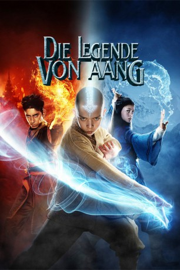

#5819 Die Legende von Aang
Alternativ: The Last Airbender
 
 IMDB-Wertung: 4.2 / 10
IMDB-Wertung: 4.2 / 10  Metascore: 0
Metascore: 0 
Der Avatar Aang ist der Einzige seiner Generation, der es vermag, die vier Elemente zu beherrschen und damit für Frieden unter den entsprechenden vier Nationen zu sorgen. Die Legende von Aang nimmt ihren Anfang, als Aang eines Tages spurlos verschwindet und die kriegerische Nation des Feuers die anderen Nationen zu unterdrücken beginnt.Hundert Jahre später finden die junge Wasserbändigerin Katara und ihr Bruder Sokka ein mysteriöses Kind, eingefroren im ewigen Eis. Es ist eben jener jahrzentelang verschollene Avatar in Gestalt des zwölfjährigen Jungen Aang. Alle Hoffnung liegt nun auf ihm, dem letzten Luftbändiger, der nun endlich seiner Bestimmung entgegengehen kann. Kann Aang die drohende Weltherrschaft des Feuerlords Ozai aufhalten?
Jahr: 2010
Dauer: 103 Minuten
FSK: 6
Land: USA Studio: Paramount PicturesTonspuren:
Untertitel: Deutsch,
Auflösung: 720p (1280x544) Größe: 4474 MB
Genre: Action, Abenteuer, Fantasy, Familie
Regisseur:  M. Night Shyamalan
M. Night Shyamalan
Drehbuch: Eleonore Adlon
Soundtrack:
Darsteller:
- Noah Ringer als Aang
 Dev Patel als Prince Zuko
Dev Patel als Prince Zuko Nicola Peltz als Katara
Nicola Peltz als Katara Jackson Rathbone als Sokka
Jackson Rathbone als Sokka Shaun Toub als Uncle Iroh
Shaun Toub als Uncle Iroh Aasif Mandvi als Commander Zhao
Aasif Mandvi als Commander Zhao Cliff Curtis als Fire Lord Ozai
Cliff Curtis als Fire Lord Ozai- Seychelle Gabriel als Princess Yue
- Katharine Houghton als Katara's Grandma
 Francis Guinan als Master Pakku
Francis Guinan als Master Pakku Damon Gupton als Monk Gyatso
Damon Gupton als Monk Gyatso- Summer Bishil als Azula
 Randall Duk Kim als Old Man in Temple
Randall Duk Kim als Old Man in Temple- Keong Sim als Earthbending Father
- Isaac Jin Solstein als Earthbending Boy
 John Noble als The Dragon Spirit
John Noble als The Dragon Spirit Morgan Spector als Lead Fire Nation Soldier
Morgan Spector als Lead Fire Nation Soldier- Karim Sioud als Fire Nation Prison Guard
- Manu Narayan als Fire Nation Head Prison Guard
- Kevin Yamada als Earth Kingdom Prisoner
- Ted Oyama als Kyoshi Villager
- Ritesh Rajan als Fire Nation Soldier
- Georgie DeNoto als Teahouse Child
- Chris Brewster als Kicking Firebender
- Ryan Shams als Lead Archer
- Jeffrey Zubernis als Water Tribe Soldier
- Brian Johnson als Water Tribe Soldier
- J.W. Cortes als Fire Lord Attendant
- Alex Alessi als Northern Water Tribe Soldier , uncredited
- Mohammed J. Ali als Fire Nation Soldier , uncredited
- Jessica Jade Andres als Suki , uncredited
 Dee Bradley Baker als Appa / Momo , uncredited
Dee Bradley Baker als Appa / Momo , uncredited- Hasan Bivings als Earth Kingdom Villager , uncredited
- Tamiko Brownlee als Kyoshi Warrior , uncredited
- Steven Carey als Frozen Fire Nation Warrior / Northern Tribe Water Bender , uncredited
- Chris Dyer als Fire Nation Soldier , uncredited
 Robert Eckard als Fire Nation Warrior , uncredited
Robert Eckard als Fire Nation Warrior , uncredited- Sam Ibram als Fire Nation Soldier , uncredited
- Adam Zebediah Joseph als Fire Nation Soldier , uncredited
- Cory Kastle als Water Nation Soldier , uncredited
- Ali Khan als Fire Nation Soldier , uncredited
- Patrick King als Water Tribe Soldier , uncredited
- Christopher Kolling als Northern Water Tribe Soldier / Fire Nation Soldier , uncredited
 Michael J. Kraycik als Northern Water Tribe Villager , uncredited
Michael J. Kraycik als Northern Water Tribe Villager , uncredited- Joe Krieg als Tai Chi Boy , uncredited
- Erica LaRose als Villager Girl , uncredited
- Loren W. Lepre als Fire Nation Warrior , uncredited
 Roberto Lombardi als Fire Nation Soldier , uncredited
Roberto Lombardi als Fire Nation Soldier , uncredited- Cosimo Mariano als Fire bender , uncredited
- Doua Moua als Earthbender Guard , uncredited
Datei: X:\2010(G-M)\Legende von Aang, Die (2010, FSK6, 1280x544).mkv seit 24.03.2017
Festplatte: HD 2010(G-Z)-2011(A-F)
 Es gibt insgesamt 85 Filme in der Gruppe '2010(G-M)'
Es gibt insgesamt 85 Filme in der Gruppe '2010(G-M)'